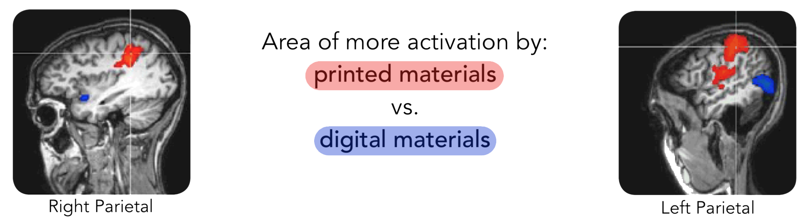
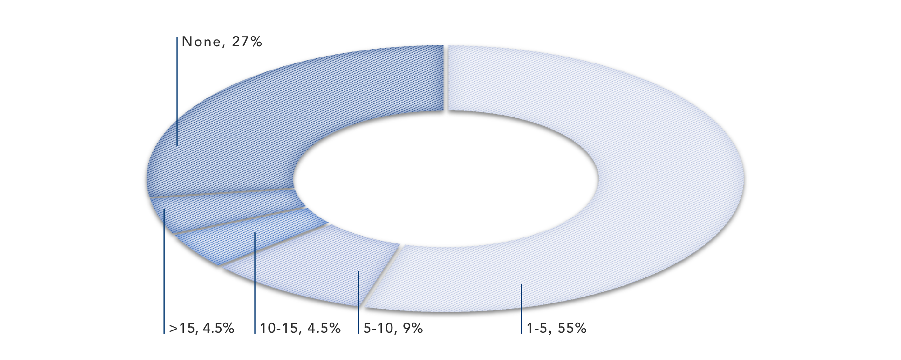
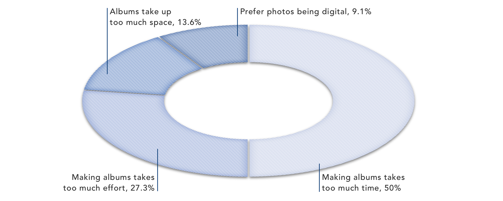
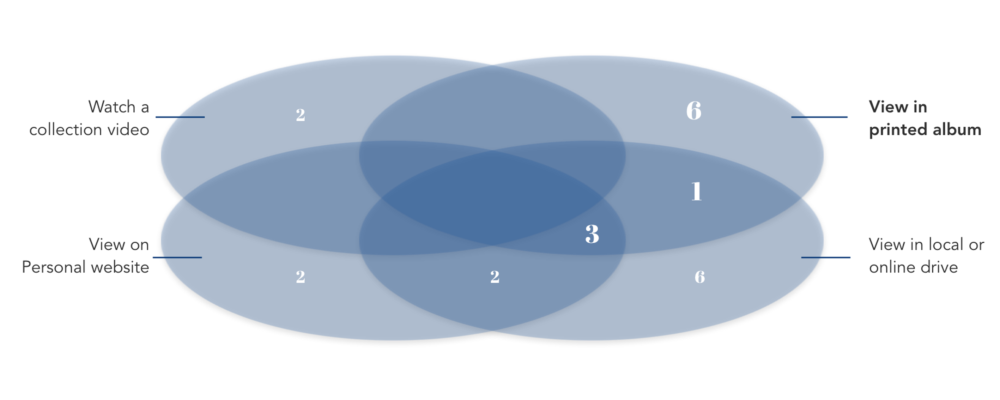
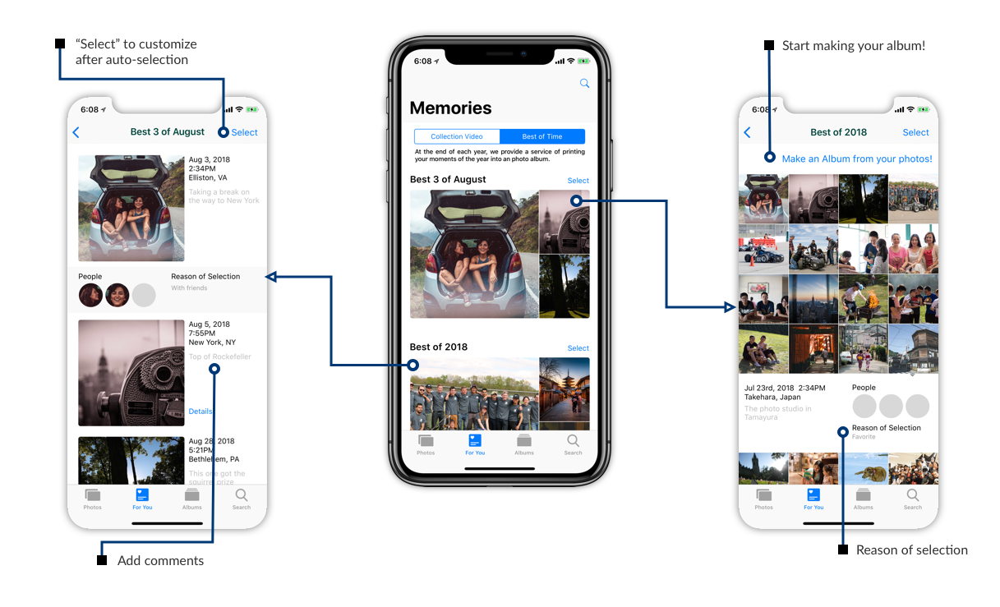
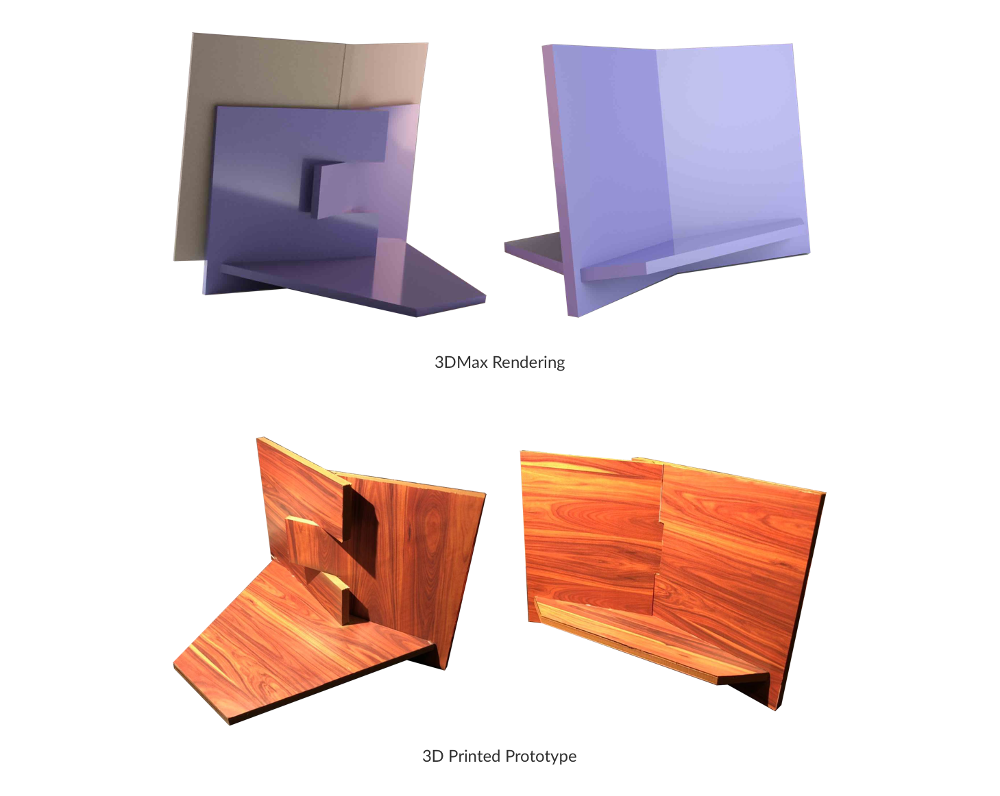

Analysizng Photo Browsing Experience
About ten years ago, most families had at least one physical photo album, and looking through the albums is one of the most emotional moments. But today, digital photography has delivered clusters of worthless photos left to be forgotten. This shift from physical to digital platform triggers me to explore the difference in browsing experience between digital and physical albums.
Digital Photos vs. Printed / Physical Photos
Compared to stimulus from digital assets, stimulus from printed materials requires more processing in the right retrosplenial cortex, which generates more emotionally vivid memory. Printed materials also does a better job at “internalization”, which means creating a link between information and thoughts or feelings.
Using Neuroscience to Understand the Role of Direct Mail
According to Daniela Petrelli and Steve Whittaker’s research, Accessing the digital seems to be a deliberate, often effortful, act. There were a few examples of families setting up digital photo shows for visiting relatives and some comments were made about serendipitous re-encounters with digital mementos, e.g. looking for a specific photo but spending an enjoyable hour browsing unrelated photos.
From these research, we can conclude that when we are trying to recall a moment by looking at a photo, having it printed creates a stronger emotional connection.
Survey on Millennials
Millennials are a special generation because they grew up with the evolution of digitalization, which makes them embracing the digital world while preserving some characteristics from the old fashion. It is interesting to know when and why they take photos, where they store their photos, and how they share their photos with their families and friends.
Number of Printed Albums possessed
Reason of not making albums
Ideal Way(s) to View Photos
Among 22 Millennials, over 60% have at least one physical photo album at home. Ten out of twenty-two reported looking through printed albums as one of their most ideal ways to view photos. Six of them pointed out that they would only choose printed albums as their preferred option. Over 70% stopped making photo albums because of the high time and effort input.
From the above analysis, we can see two design opportunities:
Design Opportunities
1
Combining characteristics of printed material and physical platform, printed album create better emotional connections between users and their precious memories.
2
As one of the best ways to recall memories, printed albums are still in demand. To bring them back, an effortless production process has to be developed.
Bridging Printed Albums and Digital Photos
To bring back printed photo albums, we want to empower people an effortless access to album production. First, we need to understand how an photo album is made:
Step one, selecting photos, takes the most time and effort because the process is highly subjective. However, the effort can be greatly reduced if we can automatically pre-select photos for them. It can be achieved with current existing technologies, especially facial and image recognition.
Then, we need to ask:
- What kind of photos/moments are precious?
- How can we guide mobile phone/ artificial intelligence to identify them? Is there a way we can identify precious photos without deliberate indication by users?
What kind of photos/moments are precious?
From the survey, most people chose photos of their childhood or birthday photos as the most important photos in printed albums. While travel photos, family photos, and birthday photos are the three most mentioned in digital devices. In other words, photos of special life events and with people who participate in these events are the ones which carry the most values.
How can we guide mobile phone/ artificial intelligence to identify them?
- By "Favorite" tag given by the users
“Favourites” is a common feature in digital albums. Filterings by users themselves are the most effective and accurate. - By facial recognition of family members and friends
One of the attributes of these selected photos is that precious photos are ones taken with others. Using the facial recognition technology, we can identify group photos that contains family members or friends. - By the time a photo stays in the user's devices
The other attribute is that these moments only happen once, or at least, do not happen frequently. As time passes, these photos become symbols of a period, and serves as a trigger that links to other memories. Time can filter out ones that seem precious but are actually not. Thus, another way to select precious memories is to see how long a photo stay in one’s device. If a photo, compared to others taken at roughly the same time, can avoid being deleted, it must be one of the most precious ones. - By social media sharing
Social media is another place to gather memories, especially those with friends. As millennials use social medias frequently, some moments can be found there. If we can detect which ones were shared on social media, we can keep a record, and add them to the list. - By the time the user stays on the photo
we can keep track of the time users stay on each photos. The longer, the better. we don’t track opening times because on mobile devices, we swipe through photos, which evens out the numbers and makes detection harder.
As most photos are stored in our mobile devices nowadays, the easiest way to produce albums is to link our devices directly to the printing mill. The following diagram addresses my solution:
As we can see, through auto-selection and one-click printing service, a four-step photo album production process is reduced to a two-step process. The auto-selection process follows the 5-level weighing system. Photos fulfilling higher level requirements have a better chance to be chosen as the best three.
Best of Time
I named the service “Best of Time” because it gathers all the best moments in our lives, and it builds up through time. The more time passes, the more valuable the moments get.
Each month, the user’s mobile device auto-selects three most precious photos based on a list of metrics. By the end of the year, the device gathers all the photos, and ask the user if he or she wants to make an album. Of course, the user is allowed to customize photo selection.
Showcasing Memories
Having printed photos collected in an album does not solve the “out of sight, out of mind” problem, as albums are usually put away from people’s eyesight, for example, deep inside a bookshelf or closet somewhere at home.
But I have a solution: An album stand.
An album on a stand combines the pros of albums and photo frames while avoiding their cons. Photo frames showcase photos, but only one at a time, and users tend not to change the photos in it. Albums contain many photos but provide much less exposure. Album on a stand contains many photos and prompts users to interact by flipping through pages. Frequently flipping and looking through the photos helps to consolidate the precious memories.

Can we add music to the viewing experience?
Since traditional printed album stimulates emotions by sight and touch, I wonder that If sound is added, we can create a third stimulation. Researchers led by Sanja Fidler in Toronto University has developed an AI that is able to create computer-generated sing-along based only on a digital photo. The name is “neural karaoke”. Using this technology, we can create stimulation in three dimensions: sight, touch, and sound.
However, Is music really adding on the experience?
The purpose of incorporating music is to stimulate users’ emotion, but AI generated music can be a distraction. It seems like a common memory that people usually share their stories while sitting around a coffee table. When they hear a piece of music and know it is generated by the AI, it is natural for them to judge the suitability of the music, or even the AI responsible for creating the music. I don’t think users will take the AI naturally before they get used to having creative AIs around.
If we have to put music in the equation, the most suitable option is a related piece of memento. For example, when we are looking at a photo of us playing the piano, a piece of recording of us playing the piano will be the best match. Then, why don’t we just play a video? And this is not achievable by a printed photo album.
Thus, the speaker is eliminated.
Design Critique
- A while after finishing this project, I was told that Google Photos and Apple both have the service of printing photos and making albums. However, I think my project possesses some uniqueness by automatically selecting worthy photos. This proved that the direction I am going converges with the pioneers in the industry.
- Don’t make users think. By integrating the service into IOS Photos app instead of designing an entirely new app, we drastically lowered the required effort of learning to use this service.
- Many efficiency-enhancing solutions come at a cost of losing enjoyment through the process and the control. Users build emotional connections while putting effort into it. Since our service took this part out of the equation, our album can never match the emotion density of DIY photo albums.
- The survey lack in rigorism. Due to too many open questions, some of the surveyees left some questions blank, or put something completely irrelevant. I put open questions because answers to highly personalized topics can be beyond expectation, and I don’t want to “guide” their thoughts by providing options.